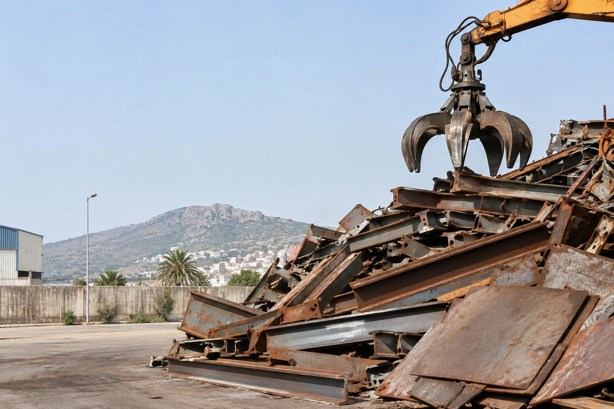
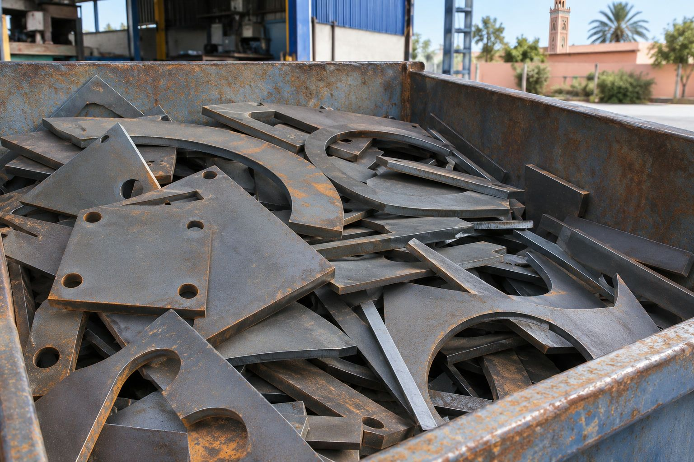

Métaux Non-Ferreux
Cuivre, aluminium, laiton, inox, plomb et zinc : des métaux de forte valeur, qui se recyclent sans perdre leurs qualités.

Ferraille lourde, chutes d'acier, fonte et tournures : nous achetons tous les métaux ferreux, du petit lot au flux industriel régulier.
Les métaux ferreux sont ceux qui contiennent du fer : on les reconnaît facilement, ils sont attirés par un aimant. Une fois triés et préparés, ils sont refondus dans les fours des aciéries pour produire de nouveaux aciers, notamment le fer à béton utilisé dans la construction.

Exemples de matières et conseils de préparation
| Matière | Exemples | Bien la préparer |
|---|---|---|
| Ferraille lourde | Poutrelles, charpentes, rails, tôles épaisses, pièces de machines | Découper aux dimensions demandées, retirer le béton et les éléments non métalliques |
| Ferraille légère / mixte | Tôles fines, profilés, carcasses, ferraille de démolition | Séparer des plastiques, bois et gravats |
| Chutes neuves d'acier | Chutes de découpe laser ou cisaille, poinçonnage, emboutissage | Garder séparées par épaisseur si possible : elles valent plus cher |
| Tournures et copeaux | Copeaux d'usinage d'acier | Stocker en benne étanche ; égoutter les huiles de coupe |
| Fonte | Blocs moteurs, radiateurs, bâtis de machines, pièces de fonderie | Séparer de l'acier ; la fonte a sa propre qualité |
| Qualités préparées | E1, E3, HMS 1/2 (selon cahier des charges) | Préparées sur nos plateformes avant livraison aux aciéries |
Chutes neuves, ferraille lourde ou ferraille mixte n'ont pas la même valeur.
Moins il y a d'éléments étrangers (terre, plastique, huile), meilleur est le prix.
Un flux régulier permet une rotation optimisée et un meilleur tarif.
Quotidiennement selon les cours du marché
Faite devant vous, avec ticket de pesée
Conforme à la réglementation de l'Office des Changes
Approchez un aimant : s'il colle, le métal est ferreux. Attention, certains inox ne sont pas magnétiques : ils sont classés à part et souvent mieux payés.
Oui. La rouille superficielle ne pose pas de problème ; seuls l'excès de terre ou de matières étrangères fait baisser le prix.
Après tri et préparation, ils approvisionnent les aciéries nationales, qui les refondent pour produire de nouveaux aciers.
Cuivre, aluminium, laiton, inox, plomb et zinc : des métaux de forte valeur, qui se recyclent sans perdre leurs qualités.
Chutes automobiles, copeaux d'usinage, câbles, rebuts électriques et équipements en fin de vie : une solution pour chaque flux.
Une photo, un poids approximatif, une adresse : nous vous répondons sous 24 h.